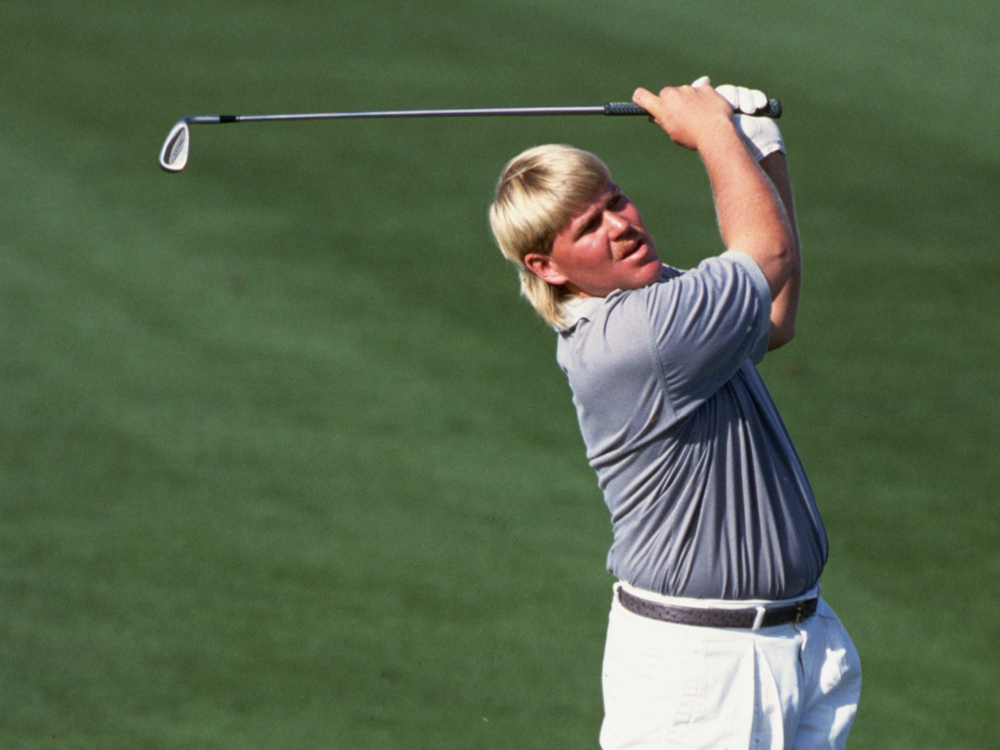

Tilbake
KLIKK PÅ EN KJENDIS FOR Å FINNE FAKTA OM DEM


Cristiano Ronaldo er en portugisisk fotballspiller med posisjonen venstreving for Manchester
United og Portugals
landslag. Ronaldo har også spilt høyre kant og spiss. Han er en rask og målfarlig angrepsspiller med et
fantastisk teknisk register.
Ronaldo har vunnet Mesterligaen fem ganger og blitt seriemester i England, Spania og Italia. Dessuten har
han
mottatt den prestisjetunge prisen Ballon d'Or fem ganger. Han har i tillegg verdensrekorden i antall
landslagsmål og blitt Europamester med Portugal.
Cristiano Ronaldo ble kåret til Årets fotballspiller i Europa (UEFA Best Player in Europe Award) i 2014,
2016 og 2017. Han ble tildelt Ballon d'Or i 2008, 2013, 2014, 2016 og 2017. Det er bare Lionel Messi som har
mottatt prisen flere ganger. Ronaldo fikk også utmerkelsen FIFA World Player of the Year i 2008 og The Best
FIFA Men's Player i 2016 og 2017.
Mens han var i Manchester United fikk han prisen The Professional Footballers Association Players' Player of
the Year i 2007 og 2008.

Undergrunn (stilisert UNDERGRUNN; UG), er en norsk rapgruppe fra Oslo. Gruppen består av de seks
medlemmene Patrick Bakkeng (Fretex), Gabriel Doria (Plaza), Marcos Haugestad (Rikpappa), Sverre Skogheim
Gudmestad (Pus), Jo Almaas Marstein (Marstein) og Jon Ranes (Loverboy), som sammen med Marcos Haugestad
(Rikpappa) også er gruppens fungerende produsenter. De har gitt ut albumene Firenze's Finest (2020),
Buketter & Ballspill (2021) og UNDERGRUNN (2022), til gode kritikker. UNDERGRUNN gav dem deres første
topplassering på norske albumlister. Undergrunn møttes gjennom felles oppvekst på Tøyen og Gamlebyen i Oslo,
og begynte å lage musikk sammen da de gikk på ungdomsskolen. Debuten kom i en alder av 15 år med låta
«Isbil», som resulterte i opptreden på Bylarm. I 2018 gav gruppa ut EP-en UG sommer; året etter mixtapen
UG klikk i 2019, der låta «Dr. Plaza» fikk over én millioner avspillinger på Spotify. «Dr. Plaza» ble
gruppens gjennombrudd

EMINEM. Marshall Bruce Mathers III, kjent under artistnavnet Eminem, ofte stilisert som EMINƎM og
tidligere kjent under navnet Slim Shady, (født 17. oktober 1972 i Saint Joseph) er en amerikansk rapper. Han
har vunnet Grammy- og Oscar-priser for musikken sin. Han har også hatt roller i filmene 8 Mile og The
Interview.
Rolling Stone har rangert ham som 83 på sin liste over 100 Greatest Artists of All Time, kaller ham «King of
Hip Hop».
Artisten har fått mye oppmerksomhet på grunn av tekstene sine.
I 2014 satte han verdensrekord på antall ord i en låt i hit-sangen «Rap God». Sangen inneholder 1 560 ord,
mer enn fire ord i sekundet i den 6 minutter lange sangen, og fikk Eminem inn i Guinness Book of
Records.Marshall og moren levde på sosialtrygd som moren mottok siden hun var arbeidsløs, og ifølge Marshall
hadde hun problemer med alkohol og pillemisbruk. Han har også hevdet at moren og stefaren var voldelige mot
ham. Det nevnes blant annet i «Cleaning Out My Closet» og «My Mom». Voldsbruken er aldri blitt bevist. Han
bodde tidvis hos blant annet bestemoren og sønnen hennes, som var omtrent jevnaldrende med ham. Han bodde
også hos noen av vennene sine i disse periodene, blant annet sammen med rapperen Proof og foreldrene hans.

John Daly (født 28. april 1966) er en profesjonell amerikansk golfspiller på
PGA-touren. Han er kjent for sin kraft på banen og for en rekke uheldige episoder både på og utenfor banen.
Daly er, og har alltid vært, en av de mest populære spillerne på touren. En fargeklatt og golfens "Bad Boy".
Daly ble født i California og tok avsluttende eksamen ved Universitetet i Arkansas, hvor han var medlem av
golfforeningen.
Han begynte å spille golf i 4-årsalderen, og har senere blitt en levende legende. Han ble profesjonell i
1987. I 1990 vant han Ben Hogan Utah Classic, og ble utnevnt til «PGA Tour: Rookie of the year». Han ble
medlem av PGA-touren i 1991 og tok seieren i PGA-mesterskapet allerede første året. I 1992 vant han B.C.
Open og i 1994 BellSouth Classic. I 1995 vant han sin andre major - The Open. Han ble dermed den fjerde
amerikaner etter 2. verdenskrig, til å vinne to majors før fylte 30.
Karrieren til Daly har vært avbrutt flere ganger på grunn av problemer med alkohol. Mellom 1995 og 2004 tok
han ikke en eneste seier på PGA-touren. 15. februar 2004 tok tørketiden slutt da han vant Buick Invitational
etter omspill.
Daly er også mer enn bare en golfspiller. Han er også tekstforfatter og sanger. Hans album, «My Life», er en
plate med svært personlige tekster. Her har han blant annet fått med seg Willie Nelson som gjesteartist.

Lionel Andrés Messi (født 24. juni 1987) er en argentinsk fotballspiller som siden august
2021 spiller for den franske klubben Paris Saint-Germain FC. Han er også kaptein for Argentinas
herrelandslag i fotball.
Han har vunnet UEFAs Gullstøvel seks ganger og Gullballen sju ganger.Han vant også Gullballen for
beste spiller i Fotball-VM 2014.
Han var i tillegg kjent for å være Barcelonas tredje yngste fotballspiller i 2004, og var rundt 17 år på den
tiden.
Han ble tilbudt spill for Spanias landslag, men valgte å vente til han eventuelt fikk muligheten til å
spille for sitt hjemland. I august 2005 debuterte han på Argentinas landslag, men ble utvist etter bare tre
minutters spill.
I 2005/2006-sesongen vant Messi La Liga og Champions League med Barcelona.
Den 9. desember i 2012 skåret han sitt 85. og 86. mål i kalenderåret 2012, og slo dermed Gerd Müllers rekord
på 85 mål på ett kalenderår. Han endte til slutt på 91 mål totalt i kalenderåret 2012.